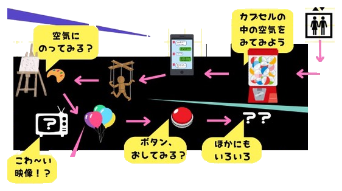

.png)
.png)
.png)
.png)
.png)
TITLE
あなたとつくる空気図鑑
- DATE
- 2026年
11月14日（土）10:00〜18:00
11月15日（日）10:00〜16:00 - PLACE
- 大阪大学中之島センター 4F展示室1・2
- FARE
- 入場無料

THE UNIVERSITY OF OSAKA NAKANOSHIMA CENTER
大阪大学中之島センター
4F展示室1・2
〒530-0005 大阪府大阪市北区中之島4丁目3-53
https://www.onc.osaka-u.ac.jp/
主催：大阪大学超域イノベーション博士課程プログラム
2026年度グループ型企画支援『「空気」を観る体験の創造』
共催：大阪大学中之島芸術センター
TITLE
PROLOGUE
「本当はこうするべきなのに...!」と思っていながら、
できないことってありませんか？
CONCEPT
『あなたとつくる空気図鑑』は、大阪大学超域イノベーション博士課程プログラム2026年度グループ型企画支援『「空気」を観る体験の創造』の企画の一つとして行われる、集団の中に存在し個人の意思決定に少なからず影響を与える、「空気」の存在を知覚し考えることを目的とした、「空気」を観る展示会です。
MAP

.png)
.png)
何やわからぬ「空気」に、自らの意思決定を拘束されている。
（山本, 1983, p.15）
ここでいう「空気」とは、誰かがそう命令したわけでもないのに、その場の人びとの表情、沈黙、視線、過去の経験、組織の慣習などから、なぜかそのように行動してしまう、そういったものです。明文化された規則ではないため、はっきり反対したり確認したりしにくく、それでいて「いまはこうするのが自然だ」と感じさせる力を持ちます。
人は、不確かな場面では、自分の判断だけでなく周囲の反応も手がかりに行動します。「場を乱したくない」、「否定されたくない」、「不利益を受けたくない」という感覚が働くと、個人の意見よりも「みんなはどう思っているか」が優先されますことがあります。その結果、誰も明示的に求めているわけではないにもかかわらず、沈黙や遠慮といった読み合いが行われ、空気が意思決定を拘束していきます。
この展示会が目指すものは、私たちの行動がときに「空気」によって方向づけられていることを、抽象的な知識としてではなく、より具体化された知識や体験を通して捉え直す契機をつくることです。作品の鑑賞や参加を通じて、普段は見過ごされがちな同調、沈黙、ためらいの働きを観察し、自分の判断がどのような場の条件のもとで形づくられているのかを考えます。
「空気」を知覚することは、必ずしもそれに逆らうことだけを意味しません。状況を見極めたうえで変化を促す、距離を取る、あるいは、あえて従うといった行動を、自覚的に選択できるようになるための土台になります。本展示会は、身近な場面で感じる違和感や葛藤から、社会のあるべき姿を考え、そのために必要な変化に自分自身が関わっていくための行動へと結びつけることを目指します。
ABOUT US
『「空気」を観る体験の創造』は、分野の垣根を超えて集まった大学院生の共創的活動を支援する大阪大学超域イノベーション博士課程プログラム2026年度グループ型企画支援に採択され、スタートしたプロジェクトです。
社会における複雑で困難な状況に対して「あるべきすがた」を着想し、新たな知の探求や知と知の融合を構想することにより価値を創り出す取り組みを先導できる高度人材の育成を目標とした、大阪大学独自の博士課程プログラムです。
OFFICIAL SITE 超域イノベーション博士課程プログラム公式サイトMEMBER

教育工学・芸術
.png)
薬学・ものづくり
.png)
情報科学・機械学習
.png)
数理科学・ELSI
.png)
外国語・フィールドワーク
.png)